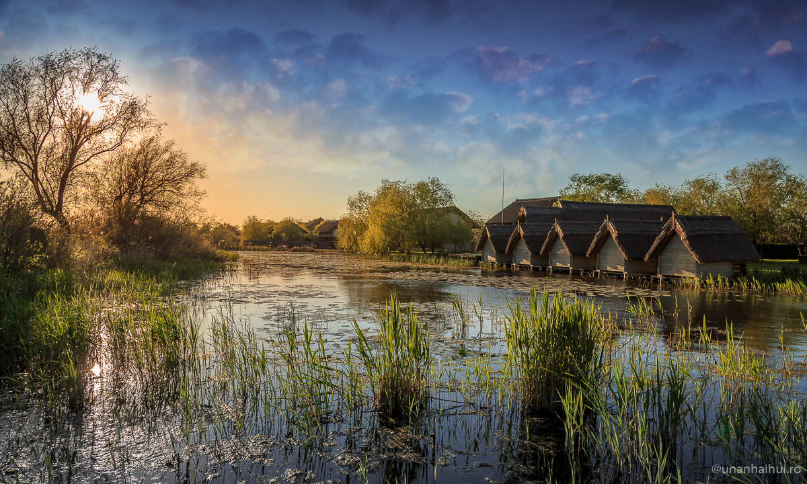

Delta Dunării
Fluviul Dunarea se intinde de la Muntii Padurea Neagra din Germania, pana la Marea Neagra, in Romania. Se formeaza din trei cursuri mici de apa: Breg, Brigach si Donau Quelle si se varsa in Marea Neagra prin cele trei brate ale Deltei: Chilia, Sulina si Sfantu Gheorghe. De la izvor si pana la Delta prin care se varsa in Mare, trece prin 10 tari (Germania, Austria, Slovacia, Ungaria, Croatia, Serbia, Romania, Bulgaria, Republica Moldova si Ucraina) si 4 capitale (Viena, Bratislava, Budapesta, Belgrad), strabatand 2860 km.
Conform literaturii de specialitate (Gastescu, 1989), Delta Dunarii reprezinta teritoriul cuprins intre prima bifurcatie a Dunarii (Ceatalul Chiliei), marginit la est de litoralul Marii Negre, la nord de bratul Chilia si la sud de complexul lacustru Razim Sinoie iar Rezervatia Biosferei Delta Dunarii este ceva mai complexa, cuprinzand si alte elemente.
